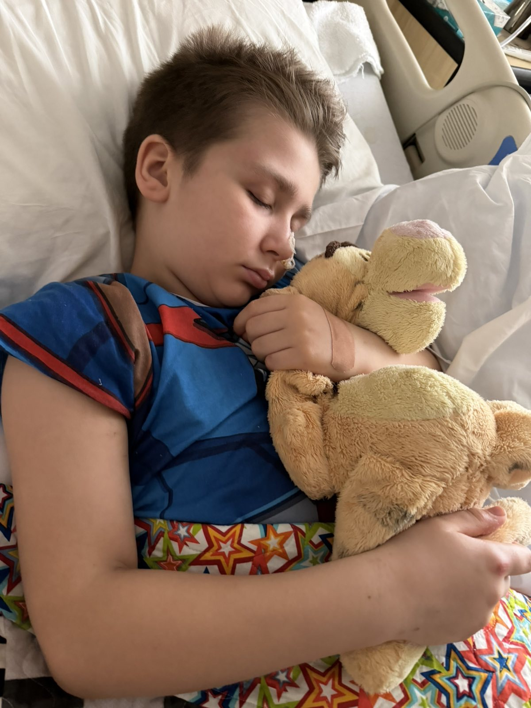
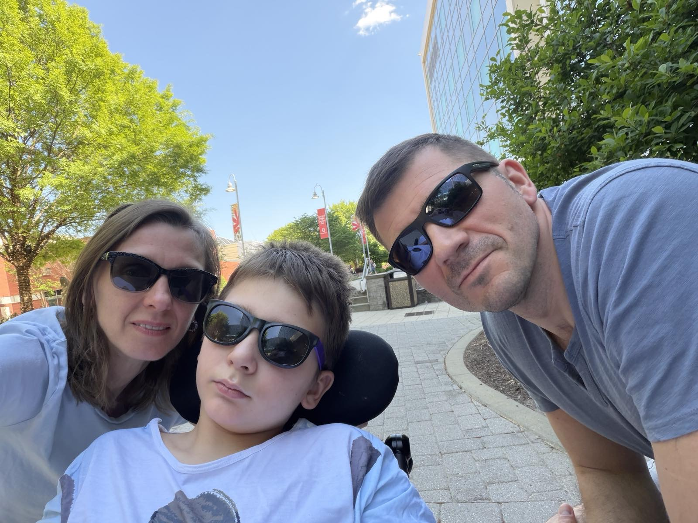
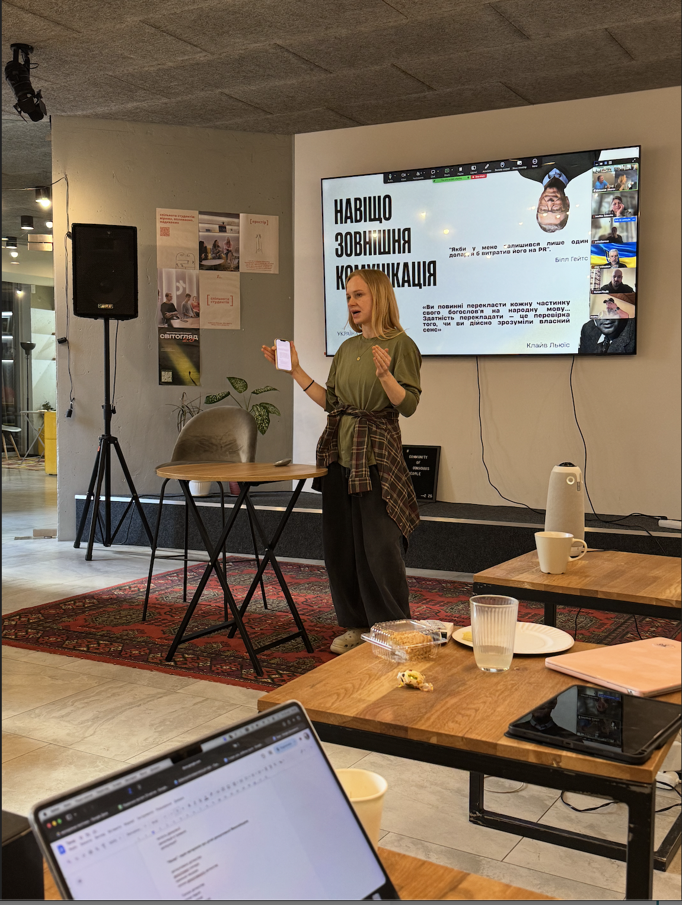
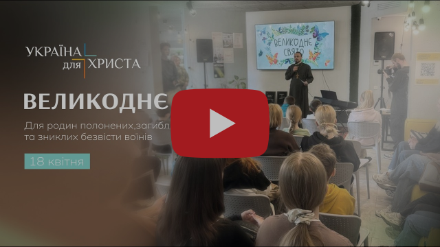
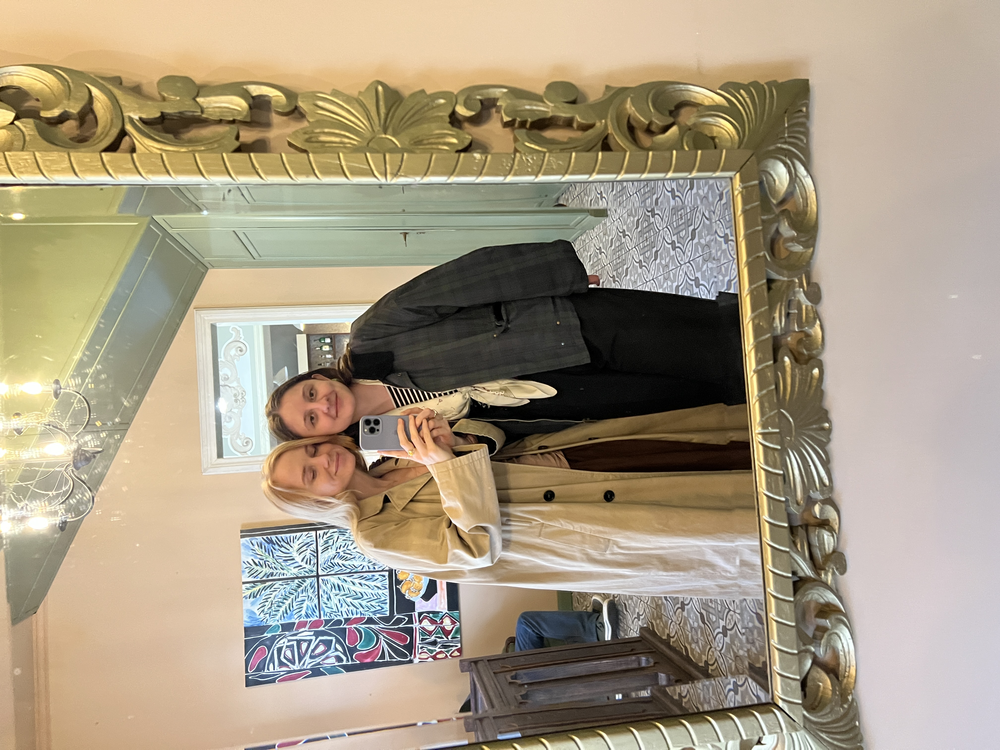
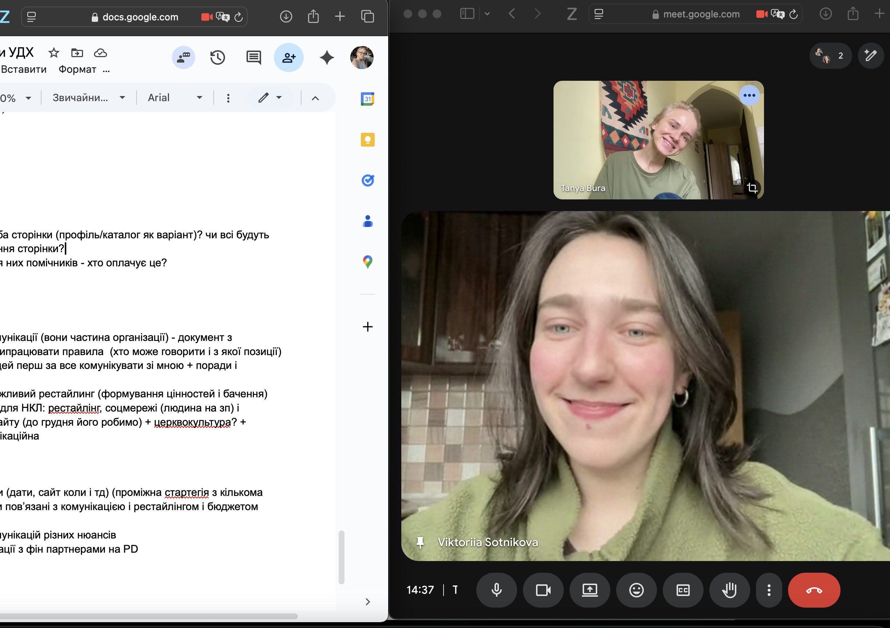

Квітневі апдейти + спешл прохання
Це видались непрості місяці, чесно кажучи
В якісь моменти здавалось, що наді мною товща води, і я навіть бачу тускле світло попереду, але вибратись не зможу.
Ситуація з сім’єю моєї сестри Юлі вибила землю з-під ніг. То дуже рідні мені люди, я верше побачила вживу їх дім і познайомилась з наймолодшим, Дейвом, лиш минулого року. Вдячна Богу, що мала шанс побувати в них і бачити їх всіх разом, щасливих і стурбованих школами-робОтами.

Після поховання Марка Юля та Юра повернулись у Північну Кароліну до Дейва. Найстарший син, Дені, зараз живе із знайомими, так як йому потрібно ходити до школи.
Дейв має вже непоганий прогрес — його виписали з реанімації та перевели у палату інтенсивної терапії. Він трошки говорить, дозволяє піднімати його ліву руку. Лікарі навіть пробували поставити його на ноги і в нього трошки вийшло!
Дейв багато спить і все ще пошкодження його мозку викликає питання. В мозку відбуваються певні спалахи, є ряд запалень і різко піднімаються тиск і тепрература. Лікарі називають його хлопчиком-дивом, бо вже навіть той прогрес, який він має зараз - неймовірний і був мало сподіваний.
Просто хочу подякувати вам, якщо ви молились. Бог відповідає - це те, що каже мені Юля. І просить дякувати кожному, хто пам’ятає про них в молитвах. Дякую. Я вірю, я певна - то Його робота і Його розмова з нами.

Будь ласка, молись далі про відновлення Дейва, про сили Юлі і Юрі (вони все ще погано їдять і сплять, живуть практично в госпіталі вже 4й тиждень.
В Юри тиждень тому померла тітка, це теж така важка історія. І в них поки немає ясності із тим, чи зможе страхування покрити їм хоч частину лікування. Чоловік, який їх збив, був в стані алкогольного сп’яніння, але він і раніше мав притягнення за подібні кейси та незаконне вторгнення я не знаю, чи зможе він їм фінансово хоч щось покрити. Вдячна, що поки що на роботі хімії дозволяють бути з Дейвом, але поки ми не знаємо, як довго це триватиме. А дейву потрібна довга різнорівнева реабілітація.
Дякую, що можу просити про молитву і ми разом можемо говорити з Богом про них.

Я давно не розповідала про справи в служінні, але насправді воно несеться і мені радісно, що можу поєднувати і навчання і служіння. Зараз я паралельно займаюсь медіа та комунікаціями і студентського служіння (Кемпусу), і з січня почала займатись комунікаціями для всієї місії “Україна для Христа”. Це велика глиба, ми починаємо практично вибудовувати цю сферу з нуля, але я бачу велику потребу і потенціал — без доброї комунікації нам все важче буде знайомитись та вибудовувати стосунки з нашими авдиторіями (а в нас є 11 служінь, 150 співробітників які працюють з різними категоріями населення). А це є основа якісного благовістя та учнівства. Звісно, комунікація важлива і для створення нових проєктів різного рівня, деякими з них я дуже пишаюсь - як от подія для сімей загиблих, безвісти зниклих та тих, хто у полоні, яка відбулась минулої суботи (відео нижче).

Якщо чесно - зараз багато навчання та домашки, багато роботи у служінні, тому я відчуваю, що довго в такому режимі не зможу бути. Але моя особлива радість - можливість будувати відносини з моїми одногрупницями.
Ми маємо гарні, глибокі розмови з Соломією, ночівлі з Нікою. А Рената (на фото) була зі мною в церкві і планує прийти ще. В неї непроста історія відносин з християнством, наразі вона дуже обережна і має певні травми через залякування та змушування ходити до церкви.
Мені би дуже хотілось показати їй іншого Бога, Того, який любить і хоче щирої, “непричесаної” розмови.

Я маю особливе прохання до вас
Я вже розповідала про свою ученицю, Віку.
За кілька днів після смерті Марка помер тато Віки. Її мама померла ще у 2015му, а сестра знаходиться на окупованих територіях і поки не може виїхати.
Віка - одна з найбільш посвячених служительок, яких я знаю. Минулого семестру вона була єдиною співпробітницею на повний час у своїй команді. Вона була і є посвяченою служителькою, не залежно від очікувань. Віка служить на максимумі, забирає дівчат до себе на квартиру, ходить втішати, проводить жіночі групки, благовістить дівчаткам, наставляє своїх 3х учениць і вчить їх благовістити іншим.

Наразі Віка має складну ситуацію і отримує менше третини своєї заробітної плати. Наразі вона шукає партнерів, які би хотіли доєднатись і разом з нею служити молоді в Україні через фінанси та молитву.
Мені дуже хочеться, щоб Віка могла продовжити служити, я знаю, що вона вже багато зробила для цього. І хочу попросити у вас допомоги: можливо, ви маєте когось знайомого, кому було би цікаво приєднатись до цього служіння в якості партнера? Я була би дуже вдячна, якби ви могли розповісти про Віку та її потребу і підтримати її таким чином. Я з радістю надішлю більше інформації про неї, лиш дайте знати, якби то було цікаво
Дякую, що у вашому серці є місце для служіння молоді зі мною, а тепер і не тільки молоді
сьогодні хочу лишити лінк для підтримки Віки тут
Буду рада знати і ваші потреби і молитись про них, або, якщо можу — практично відповісти на них